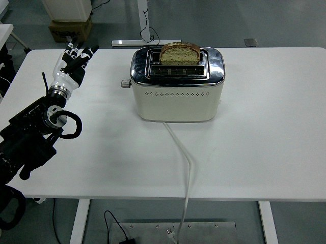

RoboMIND · tienkung_gello_1rgb__press_down_toaster/1211_172414
Press down toaster

Annotation
From the dedicated visual review of this video (humanoid_action_v1). Plain text · JSON
Observed outcome
- Status
visually_completed
- Description
The extended fingertips reach the lever knob on the toaster's left side (about frames 210-236). The bread slice visibly sinks into the toaster from about frame 240 and stays lowered while the hand remains against the knob (about frames 262-310). By frame 316 the knob has sprung back up, the bread slice has popped up to its original height (clearly raised by frames 316-322 and unchanged afterwards) and the fingertips are clear of the knob. The hand then withdraws to the left and up to a raised, open-fingered pose that it holds to the last frame (454). Toaster and bread end where they started; no other object is moved.
Hand roles
- Active visible arm
The single visible arm extends the dexterous hand to the toaster, places its extended fingertips on the lever knob at the toaster's left side, pushes the lever down, holds it, releases it and withdraws.
- Other arm
Not visible in the overhead view; telemetry for the second 8-column block is constant, so it does not act.
Coordination
Single-arm action; no hand-to-hand transfer, second-hand support or human interaction. Fingers stay extended, with some slight curl, and the contact is a pressing push by the fingertips, not a grasp.
Robot-side evidence
- Visible description
Only one arm is visible: a white-and-black humanoid arm with a dark multi-finger dexterous hand entering the overhead image from the left edge, above a dark robot body mass at the lower-left; the toaster sits to the right. The thumb is the black digit on the image-bottom side of the hand.
- Source annotation
original/task_prompt.txt: 'Press down toaster'; no side stated.
- Telemetry evidence
Only the first 8 columns of puppet/joint_position vary (columns 0-6 change, column 4 sweeps about -0.06 to 1.38 and back to -0.18, column 7 is the nearly constant hand/gripper-like value near 0.99-1.0); the last 8 columns are constant. The moving block therefore corresponds to the visible arm. Which block is left vs right is not documented in the source.
- Inferred side
Probably the robot's left arm: if the robot faces image-right from the left edge, image-up is its left, the visible arm is on the image-upper side, the thumb points toward image-bottom (medial side for a palm-down left hand), and the first telemetry block conventionally maps to the left arm. This is inference, not established, so the usable prompt says 'arm at the left edge of the image' instead of naming a robot side.
- Visual certainty
Robot-relative left/right not reliably determined from the overhead view (body and facing direction not visible).
Chronology
| Frames | Observation |
|---|---|
| 0–38 | Arm held still at the left edge with the hand raised and fingers open pointing up; toaster with a blue-green bread slice raised in the slot; table otherwise empty. Telemetry flat. |
| 40–100 | Hand begins to lower and rotate; wrist/forearm rotate while fingers point toward the toaster (about frames 40-100; the hand is seen palm-down and open from about frame 56). |
| 102–190 | Arm extends along the table toward the toaster's left side with the fingers extended and gradually curled; hand moves toward the lever knob on the toaster's left side (frames 150 and 190 viewed at native resolution). |
| 192–236 | Fingertips approach and touch the lever knob; by about frame 215-236 the fingertips rest on the knob. |
| 238–262 | Knob is pushed down and the bread slice begins to sink into the toaster slots (visible from about frame 240-242). |
| 264–310 | Hand stays against the knob; bread slice stays lowered (frames 286, 296, 304, 310 viewed at native resolution). |
| 312–322 | Fingertips lift off; the knob rises and the bread slice pops back up to full height (knob visible raised at frame 316). |
| 324–454 | Arm withdraws left and up; hand comes to a raised, open-fingered pose at the left edge from about frame 340 and stays there to the end. Toaster lever up, bread slice raised. |
Clip selection
The episode is one continuous single task (press the toaster lever down, hold, release, withdraw); there are no independent subtasks, so the complete original clip is retained and no shortened branch or separate full-sequence prompt is written.
Differences from the publisher annotation
- None found: the visible action matches the source instruction 'Press down toaster'. The source does not state which arm acts; the bread slice is a blue-green sponge-like slice.
Uncertainties
- Robot-relative left/right arm is not established from the overhead view; probable left arm is inferred from geometry and telemetry-block convention and is not asserted in the prompt.
- Exact finger configuration during contact (which fingertips touch the knob, whether the push is by extended fingers or by a slightly curled hand) cannot be resolved at 640x480 overhead resolution; the prompt says 'extended fingertips'.
- The lever is identified as the knob protruding from the toaster's left side because the bread slice sinks when it is pushed down and rises when released; the lever's slot is not otherwise visible.
- Whether the toaster is heating is not visible.
- Moment when the hand actively lifts versus the lever springing up is not separable; the prompt says the hand releases it and the lever and bread spring back up.
- FPS is not recorded; frame indices are authoritative, not time.
Complete review record action_review.json
{
"prompt_protocol": "humanoid_action_v1",
"prompt_protocol_note": "humanoid_action_v1 is applied by analogy to a non-Humanoid-Everyday/GR1 humanoid (Tien Kung with dexterous hands, single overhead RGB stream); not an original dataset of that protocol.",
"prompt_provenance": "visually_authored_from_video_and_initial_frame",
"dataset": "x-humanoid-robomind/RoboMIND",
"task": "press_down_toaster",
"episode_id": "1211_172414",
"embodiment": "tienkung_gello_1rgb",
"source_video": "../../original/data/trajectory.hdf5",
"generation_camera": "camera_top",
"source_frame_count": 455,
"source_resolution": [
640,
480
],
"source_fps": null,
"source_fps_note": "FPS is not recorded in the source HDF5; 30 FPS is only a nominal playback rate, so no real-time durations are claimed.",
"selected_source_frame_start": 0,
"selected_source_frame_end_exclusive": 455,
"selected_frame_count": 455,
"selection_reason": "The episode is one continuous single task (press the toaster lever down, hold, release, withdraw); there are no independent subtasks, so the complete original clip is retained and no shortened branch or separate full-sequence prompt is written.",
"usable_prompt": "The robot's arm at the left edge of the image extends its hand toward the toaster, rests its extended fingertips on the lever knob at the toaster's left side, and presses it down so the bread slice sinks into the toaster. It holds the lever down, then releases it so the lever and bread slice spring back up, and the hand withdraws to a raised pose at the left edge. Keep the camera fixed; preserve robot geometry, physically valid joint motion, and normal gripper opening and closing.",
"full_sequence_prompt": null,
"selected_action_outcome": {
"status": "visually_completed",
"description": "The extended fingertips reach the lever knob on the toaster's left side (about frames 210-236). The bread slice visibly sinks into the toaster from about frame 240 and stays lowered while the hand remains against the knob (about frames 262-310). By frame 316 the knob has sprung back up, the bread slice has popped up to its original height (clearly raised by frames 316-322 and unchanged afterwards) and the fingertips are clear of the knob. The hand then withdraws to the left and up to a raised, open-fingered pose that it holds to the last frame (454). Toaster and bread end where they started; no other object is moved."
},
"source_overall_outcome": {
"status": "visually_completed",
"source_quality_label": null,
"description": "Same as the selected action: the toaster lever is pressed down, then released and rises, with the hand withdrawn at the end. The source language instruction is 'Press down toaster'. Whether the toaster is powered or heating is not visible."
},
"anatomical_side_evidence": {
"visible_description": "Only one arm is visible: a white-and-black humanoid arm with a dark multi-finger dexterous hand entering the overhead image from the left edge, above a dark robot body mass at the lower-left; the toaster sits to the right. The thumb is the black digit on the image-bottom side of the hand.",
"source_annotation": "original/task_prompt.txt: 'Press down toaster'; no side stated.",
"telemetry_evidence": "Only the first 8 columns of puppet/joint_position vary (columns 0-6 change, column 4 sweeps about -0.06 to 1.38 and back to -0.18, column 7 is the nearly constant hand/gripper-like value near 0.99-1.0); the last 8 columns are constant. The moving block therefore corresponds to the visible arm. Which block is left vs right is not documented in the source.",
"inferred_side": "Probably the robot's left arm: if the robot faces image-right from the left edge, image-up is its left, the visible arm is on the image-upper side, the thumb points toward image-bottom (medial side for a palm-down left hand), and the first telemetry block conventionally maps to the left arm. This is inference, not established, so the usable prompt says 'arm at the left edge of the image' instead of naming a robot side.",
"visual_certainty": "Robot-relative left/right not reliably determined from the overhead view (body and facing direction not visible)."
},
"arm_roles": {
"active_visible_arm": "The single visible arm extends the dexterous hand to the toaster, places its extended fingertips on the lever knob at the toaster's left side, pushes the lever down, holds it, releases it and withdraws.",
"other_arm": "Not visible in the overhead view; telemetry for the second 8-column block is constant, so it does not act."
},
"coordination": "Single-arm action; no hand-to-hand transfer, second-hand support or human interaction. Fingers stay extended, with some slight curl, and the contact is a pressing push by the fingertips, not a grasp.",
"chronology": [
{
"source_frames_inclusive": [
0,
38
],
"observation": "Arm held still at the left edge with the hand raised and fingers open pointing up; toaster with a blue-green bread slice raised in the slot; table otherwise empty. Telemetry flat."
},
{
"source_frames_inclusive": [
40,
100
],
"observation": "Hand begins to lower and rotate; wrist/forearm rotate while fingers point toward the toaster (about frames 40-100; the hand is seen palm-down and open from about frame 56)."
},
{
"source_frames_inclusive": [
102,
190
],
"observation": "Arm extends along the table toward the toaster's left side with the fingers extended and gradually curled; hand moves toward the lever knob on the toaster's left side (frames 150 and 190 viewed at native resolution)."
},
{
"source_frames_inclusive": [
192,
236
],
"observation": "Fingertips approach and touch the lever knob; by about frame 215-236 the fingertips rest on the knob."
},
{
"source_frames_inclusive": [
238,
262
],
"observation": "Knob is pushed down and the bread slice begins to sink into the toaster slots (visible from about frame 240-242)."
},
{
"source_frames_inclusive": [
264,
310
],
"observation": "Hand stays against the knob; bread slice stays lowered (frames 286, 296, 304, 310 viewed at native resolution)."
},
{
"source_frames_inclusive": [
312,
322
],
"observation": "Fingertips lift off; the knob rises and the bread slice pops back up to full height (knob visible raised at frame 316)."
},
{
"source_frames_inclusive": [
324,
454
],
"observation": "Arm withdraws left and up; hand comes to a raised, open-fingered pose at the left edge from about frame 340 and stays there to the end. Toaster lever up, bread slice raised."
}
],
"uncertainties": [
"Robot-relative left/right arm is not established from the overhead view; probable left arm is inferred from geometry and telemetry-block convention and is not asserted in the prompt.",
"Exact finger configuration during contact (which fingertips touch the knob, whether the push is by extended fingers or by a slightly curled hand) cannot be resolved at 640x480 overhead resolution; the prompt says 'extended fingertips'.",
"The lever is identified as the knob protruding from the toaster's left side because the bread slice sinks when it is pushed down and rises when released; the lever's slot is not otherwise visible.",
"Whether the toaster is heating is not visible.",
"Moment when the hand actively lifts versus the lever springing up is not separable; the prompt says the hand releases it and the lever and bread spring back up.",
"FPS is not recorded; frame indices are authoritative, not time."
],
"source_annotation_discrepancies": [
"None found: the visible action matches the source instruction 'Press down toaster'. The source does not state which arm acts; the bread slice is a blue-green sponge-like slice."
],
"inspection_coverage": {
"entire_sequence_reviewed": true,
"sampled_decoded_frame_indices": [
0,
2,
4,
6,
8,
10,
12,
14,
16,
18,
20,
22,
24,
26,
28,
30,
32,
34,
36,
38,
40,
42,
44,
46,
48,
50,
52,
54,
56,
58,
60,
62,
64,
66,
68,
70,
72,
74,
76,
78,
80,
82,
84,
86,
88,
90,
92,
94,
96,
98,
100,
102,
104,
106,
108,
110,
112,
114,
116,
118,
120,
122,
124,
126,
128,
130,
132,
134,
136,
138,
140,
142,
144,
146,
148,
150,
152,
154,
156,
158,
160,
162,
164,
166,
168,
170,
172,
174,
176,
178,
180,
182,
184,
186,
188,
190,
192,
194,
196,
198,
200,
202,
204,
206,
208,
210,
212,
214,
216,
218,
220,
222,
224,
226,
228,
230,
232,
234,
236,
238,
240,
242,
244,
246,
248,
250,
252,
254,
256,
258,
260,
262,
264,
266,
268,
270,
272,
274,
276,
278,
280,
282,
284,
286,
288,
290,
292,
294,
296,
298,
300,
302,
304,
306,
308,
310,
312,
314,
316,
318,
320,
322,
324,
326,
328,
330,
332,
334,
336,
338,
340,
342,
344,
346,
348,
350,
352,
354,
356,
358,
360,
362,
364,
366,
368,
370,
372,
374,
376,
378,
380,
382,
384,
386,
388,
390,
392,
394,
396,
398,
400,
402,
404,
406,
408,
410,
412,
414,
416,
418,
420,
422,
424,
426,
428,
430,
432,
434,
436,
438,
440,
442,
444,
446,
448,
450,
452,
454
],
"sampling_method": "Every second decoded frame of camera_top (frames 0-454) in sequential temporary 4x3 contact sheets covering the complete 455-frame source, plus native-resolution crops at transitions.",
"native_resolution_frame_indices": [
150,
190,
215,
230,
236,
242,
244,
250,
262,
286,
296,
300,
304,
310,
314,
316,
322,
330
],
"conditioning_png_inspected_after_sequence": true,
"conditioning_png": "../first_frame.png",
"temporary_evidence_location": "/tmp/rm_review_tienkung_gello_1rgb__press_down_toaster_1211_172414 (not a dataset artifact; removed)",
"ancillary_camera_videos_used": false,
"telemetry_used": "puppet/joint_position column variance and values sampled every 25 frames as supporting evidence only."
},
"generation_reference_validation": {
"source_frame_start": 0,
"source_frame_end_exclusive": 455,
"frame_count": 455,
"lossless_source_frame_correspondence_passed": true,
"original_source_hdf5_retained_unchanged": true
},
"channel_order_note": "Channel-order correction (2026-10-15): RoboMIND stores Tien Kung JPEGs with red and blue swapped relative to a standard decoder; this review was made on uncorrected frames, so colour terms in its observations are swapped (teal/cyan reads as yellow or yellow-green, blue as orange/brown, brown/pink as blue). Actions, timing and outcomes are unaffected. All decoded derivatives are now corrected."
}